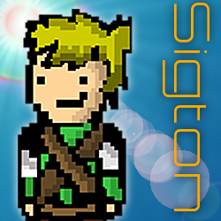
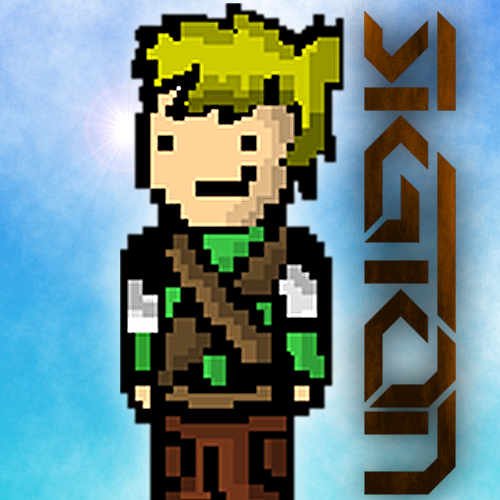
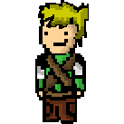

About Sigton
For those of you that haven't been paying any attention, my username for very neary everything these days is Sigton.
I've been asked many, many times what it means. I've asked myself that too; and I still have no idea. The username originated when I was choosing
a username for Clash of Clans; Sigton sprung to mind so I used that. It has rather stuck over the years. If you see someone with the username "Sigton",
there's a high chance it'd be me (apart from on Twitch, where I had to use the username "thesigton").
Then, there's my logo. In the last 2 years the overall design idea hasn't changed at all really, I've only made refinements. All of them include my username and my OC (original character). I've collected my history of logos and written a short description of each.
Then, there's my logo. In the last 2 years the overall design idea hasn't changed at all really, I've only made refinements. All of them include my username and my OC (original character). I've collected my history of logos and written a short description of each.
1. My first logo with my OC and username; and it is rather awful. First and foremost, the aspect ratio is wrong. The text is too small, hard to read. Generally bad quality and slightly fuzzy. As I'm sure you can tell this was made in MS Paint. Yeah...
2. This one was made quite a while after my first, and since then I had learned a lot. Now using GIMP; I had half a chance of making something proffesional looking. Despite the software, it still looks pretty bad. The quality honestly makes me cringe; I couldn't have made it more blurred if I'd tried. Plus there's the over-use of lighting effects, but at least the aspect ration was 1:1.

3. Things began to improve greatly. Still too many lens flares (there's 4 or 5 in there...), and still to fuzzy but apart from that; improvement. The new font is sleeker and genereally nicer looking, though maybe a bit too thin. The background is too plain, and the lighting effects are too over the top. Apart from that; not bad.
3. Things began to improve greatly. Still too many lens flares (there's 4 or 5 in there...), and still to fuzzy but apart from that; improvement. The new font is sleeker and genereally nicer looking, though maybe a bit too thin. The background is too plain, and the lighting effects are too over the top. Apart from that; not bad.

4. My current logo! I'm really pleased with how this one looks. The edges are sharp and clean, the font is bold (though some say it is hard to read), and the cloudy background makes it a bit more interesting. Now there's minimal lighting effects, which is better. The shadows look nice, the mottled orange effect on the text works. Not bad!
4. My current logo! I'm really pleased with how this one looks. The edges are sharp and clean, the font is bold (though some say it is hard to read), and the cloudy background makes it a bit more interesting. Now there's minimal lighting effects, which is better. The shadows look nice, the mottled orange effect on the text works. Not bad!
You never know, one day I might have an original idea and create a logo that looks completely different and new. Probably not though...
Moving on; to my original character. This is the only thing that hasn't changed at all in the last few years, always been the same image.
I like it though; it's part of me now. It wasn't even created by me, my great friend RiceParadox made it for an RPG game he was making. I asked if I could use it in one of my games, then ended up using it for my logos, banners, thumbnails... It's leeked into everything I make. It's the official branding of Sigton, pretty much.
I like it though; it's part of me now. It wasn't even created by me, my great friend RiceParadox made it for an RPG game he was making. I asked if I could use it in one of my games, then ended up using it for my logos, banners, thumbnails... It's leeked into everything I make. It's the official branding of Sigton, pretty much.
